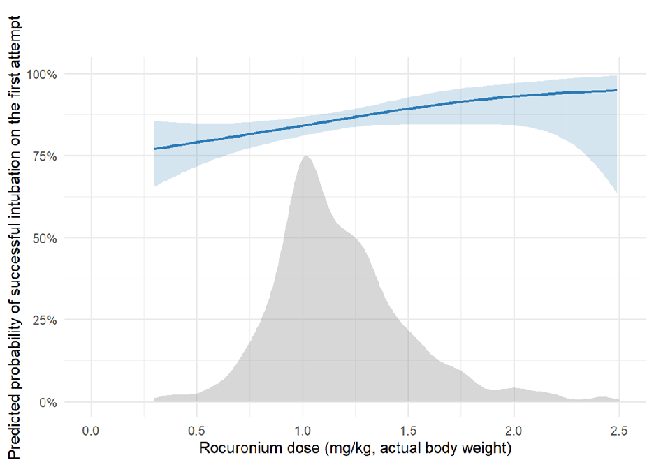
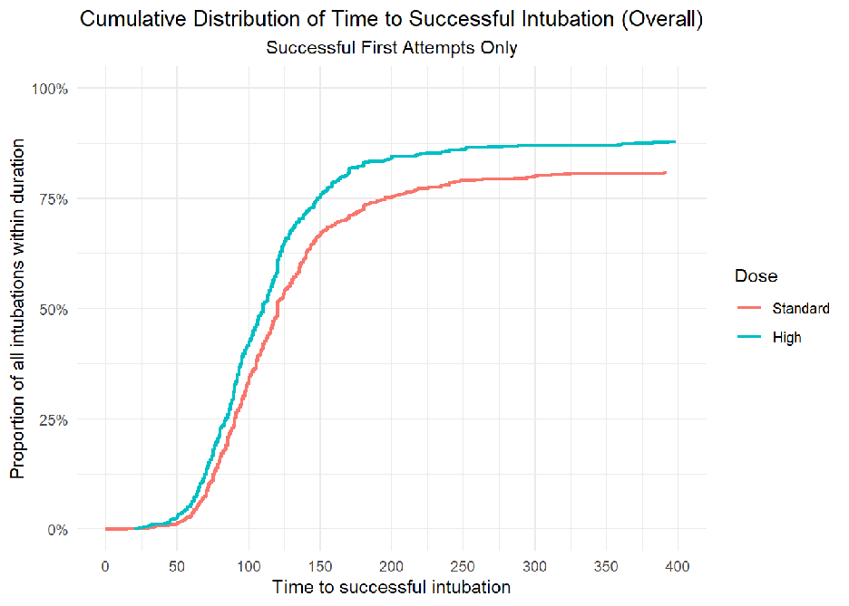
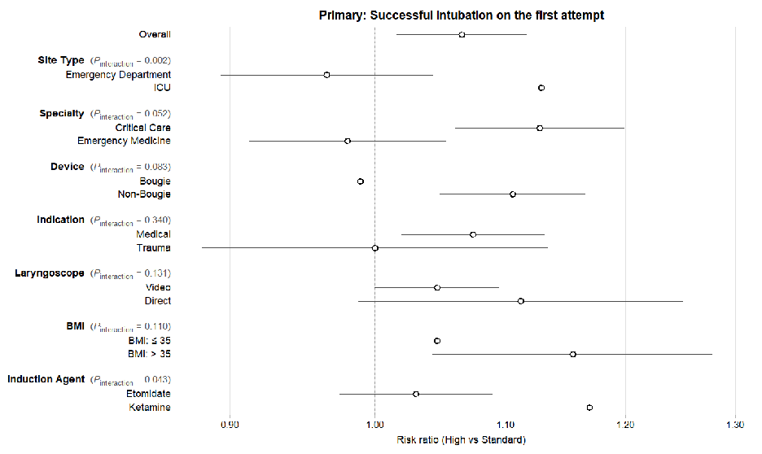

本ページで使用する略語一覧
| 略語 | 正式名称 — 日本語訳 |
| RSI | Rapid Sequence Intubation — 迅速導入気管挿管 |
| NMB | Neuromuscular Blocking agent — 筋弛緩薬 |
| FDA | Food and Drug Administration — 米国食品医薬品局 |
| ED | Emergency Department — 救急部 |
| ICU | Intensive Care Unit — 集中治療室 |
| RCT | Randomized Controlled Trial — 無作為化比較試験 |
| RR | Relative Risk — 相対リスク（1より大＝リスク増加） |
| CI | Confidence Interval — 信頼区間 |
| ARD | Absolute Risk Difference — 絶対リスク差 |
| NNT | Number Needed to Treat — 治療必要数（1例あたり初回成功を増やすのに必要な人数） |
| DEVICE | Direct versus Video Laryngoscope trial — 直視喉頭鏡 vs ビデオ喉頭鏡 RCT |
| PREOXI | Pragmatic Trial Examining Oxygenation Prior to Intubation — 挿管前酸素化 RCT |
| IBW | Ideal Body Weight — 理想体重 |
| BMI | Body Mass Index — 体格指数 |
| IQR | Interquartile Range — 四分位範囲 |
| NEAR | National Emergency Airway Registry — 全米救急気道レジストリ |
SECTION 1初回挿管成功がなぜ重要か
緊急気管挿管は高リスク処置である
救急部（ED）と集中治療室（ICU）では、頻繁に緊急気管挿管が必要となる。緊急挿管中には1.0〜3.1%の患者が心停止を経験するとされ、决して安全な手技とは言えない。初回の挿管試みで成功すること（first-attempt success, first-pass success）は、低酸素血症・低血圧・死亡といった手技中合併症の発生率と関連するとされており、挿管の技術的目標として広く重視されている。
挿管成功の鍵となるのは、最適な挿管条件をいかに迅速に整えるかである。筋弛緩薬（NMB）を用いた迅速導入気管挿管（RSI）は、顎・上気道・喉頭の筋弛緩と横隔膜・肋間筋の弛緩によって咳嗽・嘔吐・体動を抑制し、意識消失から挿管完了までの時間間隔を短縮することで誤嚥リスクを低下させる。特に循環動態が不安定な重症患者では、鎮静薬単独では不十分なことがあり、NMBの使用が重要である。
SECTION 2ロクロニウムの薬理と用量の問題
ロクロニウムの特性とFDA承認用量
ロクロニウムは最も広く使用される非脱分極性NMBであり、他の非脱分極性薬に比べて発現が速いのが特徴である。発現速度が速い理由は、効力（potency）が低いため、より多くの分子数を投与でき、神経筋接合部での濃度勾配が大きくなるからである。
FDA承認用量は0.6〜1.2 mg/kg（RSI用途）とされている。しかし、サクシニルコリン（脱分極性NMB）との比較試験の多くは1.2 mg/kg未満のロクロニウムを用いており、サクシニルコリンのほうが優れた挿管条件を示す結果が多い。一方、臨床現場ではFDA上限量の1.2 mg/kgを超えた投与が行われることが少なくない。ED領域のNEAR（National Emergency Airway Registry）データでは、ロクロニウム用量と初回挿管成功率のあいだに用量反応関係が存在し、1.2 mg/kgを超えた時点で成功率が著明に改善することが示されている。
SUMMARY第1章のキーメッセージ
SECTION 3二次解析の元となった2つのRCT
DEVICE試験とPREOXI試験
本研究は、DEVICE試験とPREOXI試験という2つの多施設RCTのデータを用いた二次解析（secondary analysis）である。
両試験ともに、18歳以上の緊急気管挿管患者を対象とした。独立した観察者が前向きにアウトカムと患者背景を収集した。体重ベースの用量は電子カルテに記録された実測体重を用いて算出した（主解析）。感度解析として理想体重（IBW）・調整理想体重（AIBW）でも解析を行った。
SECTION 4対象・アウトカム・統計手法
組み入れ・除外・アウトカム定義
元の2試験の2,440例のうち、ロクロニウムを投与された1,822例（74.7%）を本解析に組み入れた。除外理由は、ロクロニウム非投与571例（23.4%）、用量不明39例（1.6%）、複数NMB使用7例（0.3%）、体重記録なし1例（<0.1%）である。
高用量を>1.2 mg/kg、標準用量を≤1.2 mg/kgと定義した。このカットオフはFDA添付文書記載の最大用量に基づく。ROC曲線では最適閾値1.1 mg/kgが示唆されたが、添付文書と近似していたため1.2 mg/kgを採用した。
| アウトカム | 定義 |
|---|---|
| 主要（Primary） | 初回挿管成功：喉頭鏡1回挿入・ETチューブまたはブジー1回挿入で気管内に留置 |
| 副次（Secondary） | 挿管所要時間（導入〜チューブ挿入） |
| 副次（Secondary） | 重篤合併症（導入〜挿管後2分以内）：SpO₂ <80%、収縮期血圧 <65 mmHg、心停止 |
統計手法は傾向スコアを用いたoptimal full matchingを採用し、両群の測定可能な交絡因子（年齢・性別・人種・BMI・施設種別・喉頭鏡種別・術者専門・研修レベル・導入時収縮期血圧・ベースラインSpO₂・前酸素化方法など）を調整した。欠損データは多重代入法（10セット）で処理した。
SUMMARY第2章のキーメッセージ
SECTION 5患者背景と用量分布
組み入れ1,822例の概要
1,822例のうち720例（39.5%）が高用量ロクロニウム、1,102例（60.5%）が標準用量ロクロニウムを投与された。
全体の39.5%
（IQR 1.3–1.6）
全体の60.5%
高用量群と標準用量群には有意な背景差があった。高用量群に比べ、標準用量群はBMIが高く（中央値30 vs 24）、ED比率が低く（31.6% vs 54.3%）、ICU比率が高く（68.4% vs 45.7%）、敗血症・敗血症性ショックが多かった（45.9% vs 36.8%）。これらの差異が傾向スコアmatchingによる調整の対象となった。
SECTION 6用量反応関係（Figure 1）
用量が高いほど初回成功率が上昇する
ロクロニウムの体重あたり投与量と初回挿管成功確率のあいだには有意な用量反応関係が認められた（natural spline モデル、p < 0.001）。下の Figure 1 は、横軸にロクロニウム用量（mg/kg）、縦軸に初回挿管成功確率（%）を示したグラフである。青い曲線が用量反応関係であり、灰色の山形は用量分布（頻度分布）を示す。1.0 mg/kg付近に投与の山があり、用量が高いほど成功率が増加している。

SECTION 7プライマリアウトカム：初回挿管成功率
高用量群で初回成功率が有意に高い
高用量ロクロニウムを投与された720例のうち641例（89.0%）が初回挿管に成功した。一方、標準用量の1,102例では899例（81.6%）であった。粗のRR 1.09（95%CI 1.05〜1.13）、絶対リスク差7.4%（95%CI 4.1%〜11%）であり、高用量が初回成功率で有利であった。
交絡因子を調整した解析でも同様の結果が得られた：調整RR 1.07（95%CI 1.02〜1.12）、絶対リスク差（ARD）5.45%（95%CI 0.1%〜9.5%）、NNT 18.3例（95%CI 10.5〜73.2）。
初回成功率
初回成功率
（95%CI 1.02–1.12）
（95%CI 4.1–11%）
（95%CI 10.5–73.2）
（95%CI 0.1–9.5%）
SECTION 8副次アウトカム：挿管所要時間（Figure 2）
高用量群で挿管が早く完了する
挿管所要時間（導入〜気管チューブ留置まで）は、高用量群の中央値109秒に対し、標準用量群は120秒であった（差 −11秒、95%CI −16〜−7秒）。Figure 2 は、初回挿管成功例の累積割合を時間軸で示した時間-イベント曲線である。緑曲線（高用量）が赤曲線（標準用量）を全体を通じて上回っており、高用量群のほうが短時間で挿管が完了する割合が高いことを視覚的に示している。

挿管所要時間（中央値）
挿管所要時間（中央値）
（95%CI −16〜−7秒）
SECTION 9合併症アウトカム
重篤合併症に有意差なし
高用量ロクロニウムが挿管中の重篤合併症に及ぼす影響については、統計的に有意な差は認められなかった。個別の合併症について、高用量群 vs 標準用量群で以下の通りであった（有意差なし）。
| 合併症 | 高用量 | 標準用量 | 差（95%CI） |
|---|---|---|---|
| SpO₂ <80% | 6.1% | 11.8% | −5.7%（−8.4〜−2.9%） |
| 収縮期BP <65 mmHg | 16.0% | 19.6% | −3.6%（−7.4〜0.14%） |
| 昇圧薬の新規/増量 | 14.3% | 17.7% | −3.4%（−6.9〜0.13%） |
| 心停止（非致死） | 0.1% | 0.5% | −0.31%（−0.91〜0.28%） |
| 心停止（致死） | 0.3% | 0.4% | −0.09%（−0.69〜0.52%） |
SUMMARY第3章のキーメッセージ
SECTION 10施設種別による効果修飾（Figure 3）
ICUでのみ有意な効果、EDでは差なし
サブグループ解析で最も重要な知見は、施設種別（ICU vs ED）による有意な効果修飾である（交互作用 p < 0.002）。下の Figure 3（forest plot）では、各サブグループにおける高用量 vs 標準用量のRRと95%CIを示している。

（95%CI 1.06–1.20）
（95%CI 0.89–1.04）
（95%CI 6.6–18.5）
ICUでは高用量ロクロニウムの明確な効果があり（RR 1.13、ARD 10.3%、NNT 9.7）、EDでは有意差を認めなかった（RR 0.97）。この差の一因として、EDでは元々高用量（1.4 mg/kg前後）が多く使用されており、標準用量と高用量の差が相対的に小さかった可能性がある。EDと ICU の処置環境・術者・患者背景の違いも関与しうる。
SECTION 11その他のサブグループ結果
ブジー使用・喉頭鏡種別・患者背景による違い
| サブグループ | 交互作用 p | 所見 |
|---|---|---|
| 施設種別 ICU vs ED | <0.002 | 有意な交互作用あり。ICU では明確な有益効果（RR 1.13）、ED では有意差なし（RR 0.97） |
| ブジー使用 使用 vs 非使用 | 0.083 | ブジー使用時は RR ≈ 1.0 で有益効果なし。ブジー非使用時は RR > 1.0 で有益。ブジーの細い径が完全筋弛緩の必要性を軽減する可能性 |
| 喉頭鏡種別 VL vs DL | 0.131 | ビデオ喉頭鏡（VL）使用時に有益効果を示唆するが、有意な交互作用なし |
| 患者背景 外傷 vs 非外傷 | 0.340 | 外傷患者では差なし。外傷による神経学的影響で元々筋緊張が低下している可能性 |
| 導入薬 エトミデート vs ケタミン | 0.043 | 有意な交互作用あり。ケタミン使用時に高用量の効果が大きい傾向。ただし導入薬は未測定交絡因子になりうる |
SUMMARY第4章のキーメッセージ
SECTION 12ICU挿管における臨床的示唆
ICUでのロクロニウム用量選択への示唆
本研究の最も実践的な示唆は、ICU での緊急気管挿管においてロクロニウム高用量（>1.2 mg/kg）が初回成功率を有意に向上させる可能性があるということである。NNT 9.7という値は、「10例に1例」の割合で初回成功を追加で達成できることを意味する。初回挿管失敗が低酸素・低血圧・心停止と関連する可能性を考えると、この改善は臨床的に意味がある。
一方でED（救急部）での挿管ではこの恩恵が見られなかった。EDでは元々高用量が多く使用されており（高用量群のうち54.3%がED症例）、標準用量との差が小さかった可能性がある。また、ED術者とICU術者の経験・プラクティスの違いも関与しうる。
SECTION 13研究の限界と今後の課題
仮説生成研究であり、RCTが必要
本研究の最大の限界は、ロクロニウム用量がランダム化されていない点である。治療医がロクロニウム用量を自由に決定したため、測定不可能な交絡が残存する可能性が高い。高用量群はBMIが低く、ED比率が高く、外傷患者が多かった—これらは傾向スコアで調整されたが、未測定交絡（例：「難しそうな挿管と判断して多めに投与した」という判断バイアス）は除外できない。著者らはこの結果を明確に 仮説生成（hypothesis-generating） と位置づけており、高用量 vs 標準用量ロクロニウムを直接比較するRCTが必要と述べている。
また、高用量ロクロニウムの潜在的な害として、より長い神経筋遮断持続時間が挙げられる。本研究では挿管後2分以内のデータしか収集されておらず、それ以降の合併症（外傷後PTSDにおける覚醒麻痺の経験、挿管後の神経学的診察の制限など）は評価されていない。スガマデクス（ロクロニウム拮抗薬）の使用も記録されていない。さらに、体重は電子カルテ記録に依存しており、推定体重が混入している可能性もある。
先行研究では、ロクロニウム（1.2 mg/kg以下）はサクシニルコリンより挿管条件が劣るとされてきた（Cochrane SR, Anaesthesia 2017）。しかし本研究が示すように、ロクロニウムを1.2 mg/kgを超えて投与することで挿管条件が改善する可能性がある。高用量ロクロニウムとサクシニルコリンを直接比較したRCTは限られており、今後の重要な研究領域である。なお、スガマデクスを用いればロクロニウムの筋弛緩を完全拮抗できるため、「挿管失敗時のバックアップ」という観点ではサクシニルコリンより優位な側面もある（代謝による自然消失を待たなくてよい）。
SUMMARY第5章のキーメッセージ
出典：April MD, Butler H, DeMasi SC, et al. Rocuronium Dose and First-Attempt Intubation Success in the Critically Ill: Secondary Analysis of Two Multicenter Trials. American Journal of Respiratory and Critical Care Medicine. 2026.
DOI：https://doi.org/10.1093/ajrccm/aamag203
本資料は教育目的で作成したサマリーです。診断・治療方針の決定には必ず原典論文を参照してください。
制作：ICU 関谷